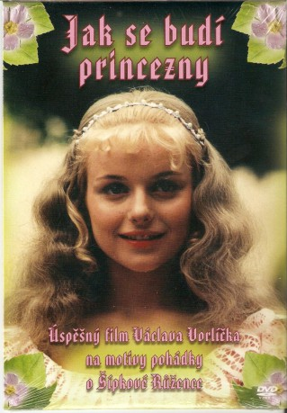

#10339 Wie man Dornröschen wachküßt
Alternativ: Prinzessin Dornröschen (Englischer Titel)
 
 IMDB-Wertung: 7.2 / 10
IMDB-Wertung: 7.2 / 10  Metascore: 0
Metascore: 0 
Einem Königspaar wird bei der Geburt ihrer Tochter prophezeit, dass ihre Tochter an ihrem 17. Geburtstag in einen langen Schlaf versinken werde. Die Eltern versuchen ihr Kind zu schützen. Nach dem Märchen DORNRÖSCHEN der Gebrüder Grimm. Auch bekannt unter dem Titel WIE MAN DORNRÖSCHEN WACHKÜSST. Stimmungsvolle Märchenverfilmung von Regisseur Václáv Vorlícek, der auch DREI HASELNÜSSE FÜR ASCHENBRÖDEL drehte.
Als dem Herrscherpaar des Rosenkönigreichs eine Tochter geboren wird, ist die Freude groß. Doch das Glück wird von einer bösen Voraussage überschattet. Melanie, Schwester der Königin und eigentliche Thronerbin, prophezeit: an ihrem 17. Geburtstag wird sich Rosa, so wurde das neugeborene Kind genannt, an einem spitzen Gegenstand stechen, und das ganze Schloss wird in einen tiefen Schlaf sinken.
Jahr: 1978
Dauer: 83 Minuten
FSK: 0
Land: Tschechoslowakei Studio: Jugendfilm-VerleihTonspuren:
Untertitel:
Auflösung: 720p (958x720) Größe: 2191 MB
Genre: Komödie, Abenteuer, Fantasy, Familie
Regisseur: Václav Vorlícek
Drehbuch: Bohumila Zelenková
Soundtrack: Karel Svoboda
Darsteller:
- Jirí Sovák als král Dalimil
- Vladimír Mensík als Matej
- Milena Dvorská als královna Eliska
- Frantisek Filipovský als Baron
- Marie Horáková als Ruzenka
- Jan Kraus als Princ Jirí
- Oldrich Velen als Král Vendelín
- Jan Hrusínský als Princ Jaroslav
- Stella Zázvorková als královna Anezka
- Libuse Svormová als Melánie
- Václav Postránecký als Jakub
- Vlastimil Hasek als Sluha prince Jirího
- Evelyna Steimarová als komorná Miroslava
- Milos Vavruska als hajný Tomás
- Jirí Lír als Písar
- Nada Konvalinková als Ruzenka
- Lubor Tokos als
- Iva Bittová als Dvorní dáma (uncredited)
- Marie Brozová als Stará sluzka u Melánie
- Miroslava Hozová als Betka
- Marie Crhová als Dvorní dáma
- Pavla Marsálková als Selka na trhu
- Lubomíra Willigová als Porodní bába
- Jana Bittlová als Dvorní dáma
- Oskar Hák als Vousatý granátník
- Zdenek Drysl als Dvoran
- Vladimír Pospísil als Velitel granátníku
- Blanka Krízová als Svadlena
- Jan Houdek als Dvoran
- Adolf Klejzar als Dvoran na strázi
- Vlastimil Slezák als Strázný Pulnocního království
- Ladislav Sýkora als Velitel stráze Pulnocního království
- Jan Valihrach als Dvoran na strázi
- Jan Kuzelka als Kuchar
- Milos Stránský als Dvoran
- Frantisek Svihlík als Strázný Pulnocního království
- Frantisek Miroslav Doubrava als
- Karel Fiala als
- Bohumil Koska als
- Jirí Kraus als
- Dana Kubálková als
- Josef Kubín als
- Premysl Prichystal als
- Jirí Ruzicka als
- Tatána Schottnerová als
- Jindrich Sejk als
- Miloslav Sindler als
- Benda Stanislav als
- Josef Strecha als
- Hruza Vaclav als
Datei: X:\Märchen\Wie man Dornröschen wachküßt (1978, FSK0, 958x720).mkv seit 29.12.2018
Festplatte: Kinder-Filme+Trick
 Es gibt insgesamt 61 Filme in der Gruppe 'Märchen'
Es gibt insgesamt 61 Filme in der Gruppe 'Märchen'